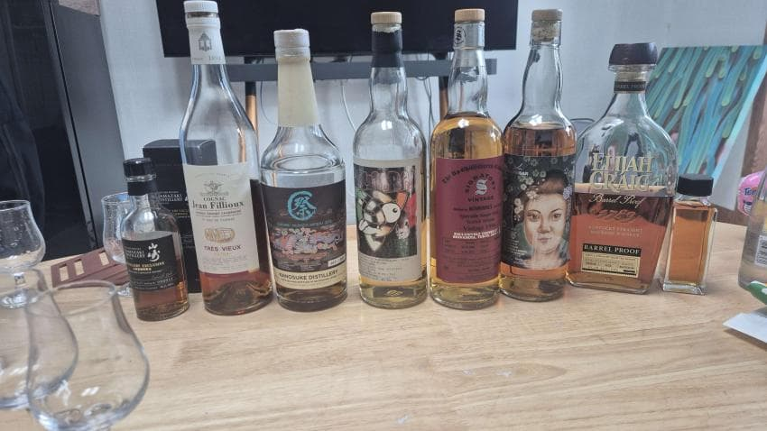

병당 한병 제한이라 바틀 사진은 이정도
1장퓨 트레뷰 40%
포도줄기 탄닌. 꽃 포도 화사
87 86.5. 87
2. 벤리네스 28. 1996
분내. 크림. 유산취. 미네랄. 바닐라. 꿀. 오크.
스펙대빈 약간 아쉬운 느낌. 가격대비는 무난
88. 87 87
3.쿨리
복숭아 견과류. 파우더리. 나무. 오렌지.
87.5
4. 5 야마 하쿠 de
야마자키는 스페니쉬와 강피트의 직선적인 맛
하쿠슈는 살짝 힘이 빠져있지만 둥글둥글한 맛
하쿠슈의 힘이 살아있었다면 하쿠슈가 더 나았을 듯?
지금 상태는 야마자키가 직관적이라 더 나았음
88 87.5
삣자
뻔피자가 컨셉이 아니더라
다른분들은 먹고 그정돈가 하시던데 난 안먹었음
5. 츠누키 홍콩 피트 px 50ppm 58
오. 그 대만싱캐느낌. 제사 향 약하게 있음
저숙성에 비싸게 받을꺼면 이정도는 뽑아라
88
러싱배를 안먹어봐서 먹어봄
가성비가 상당히 좋다.
86
ECBP B525
러싱배랑 마셔서그런지 확실히 체급차가 난다.
87.5
햄든 큰집 2020
파인애플. 고량주.
비싸고 순한 럼은 맛있다.
88
시나노야 클라렌든
가격대비 꽤 좋다.
럼펑크도 적은 편
87
내 윌렛 라이 9년과 어떻게 다른지 궁금해서 마셔본 윌렛 그린탑 10y
내 9y 라이는 풀과 민트가 날리는 느낌이 강했는데
좀 더 얌전하고 묵직하다. 개인적으로 라이는 날티가 좀 나야한다고 생각해서
9y쪽이 조금 더 취향.
윌렛 통차이가 꽤 강한걸 다시한번 느낌.
89
윌로우드 섬머
소주스피릿 잘모르겠고 보드카에 캐스크 먹인거 같음
캐스크 맛이 난다.
86
냥쿨리 2002
쿨리 특유의 복숭아 유산취가 약하고
조금 더 과일주스 느낌.
확실히 3만엔대 쿨리보단 맛있다
삼국지와는 취향차이일듯.
유산취와 복숭아 vs 과일주스
88.5
아주 조금 따라마셔서 잘 모르겠음
술장에서 케이스보고 먹고십워요 해서 가져온 드로낙
https://www.whiskybase.com/whiskies/whisky/214031/glendronach-28-year-old
드로낙 캐바를 많이 먹진 않았지만 웰메이드 셰리 재미없다고 생각해서
별로 안좋아하는데 그렌저 달라달라
91
아부나흐 20
취해서 감각이 무뎌졌음에도 확 튀는 향.
아주 매력적이다.
88.5
91 에이지부시밀
복숭아 레브27같은 맛이 꽤 강해서 놀랐다.
해외가를 고려하면 상당히 좋은 가성비
91.5
95스뱅
딸기. 약간황. 스모키. 플로럴 과일바구니. 복숭아.
이건 시간을 두고 각잡고 마시면 더 맛있게 느껴질 듯.
91년 스뱅과 스피릿이 비슷한 결이 있어서 재밌었음
시럽, 감기약과 딸기를 아슬아슬 줄타기하는 스피릿 특성
지금 살아남은 대부분의 바틀은 딸기쪽으로 느껴졌기 때문에 평가가 좋을 것이다.
https://www.whiskybase.com/whiskies/whisky/12399/springbank-21-year-old
92
기원 시그니처
파스. 민트. 포도.
먹어보고 까자
먹어봤으니 맘놓고 까자
18만원이면 안산다.
85.5
막잔으로 꺼내주신 컴박 울마
싱몰같은 질감
잘 풀려서 맛있음.
전에 델로스도 바틀 주인분이 본인이 알던 것보다 맛있다 라고 하셨는데
에어링의 영향이 꽤 커보임
89
주딱 술장털기 즐거웠다
얻어먹은 술에 비해서 너무 개똥술을 들고가서 좀 죄송스러웠슴;
그치만 내 카노스케가 최악의 바틀 1등먹어서 좋았음